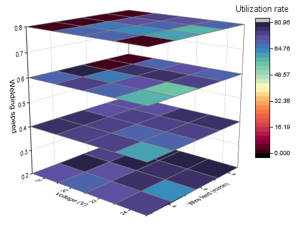
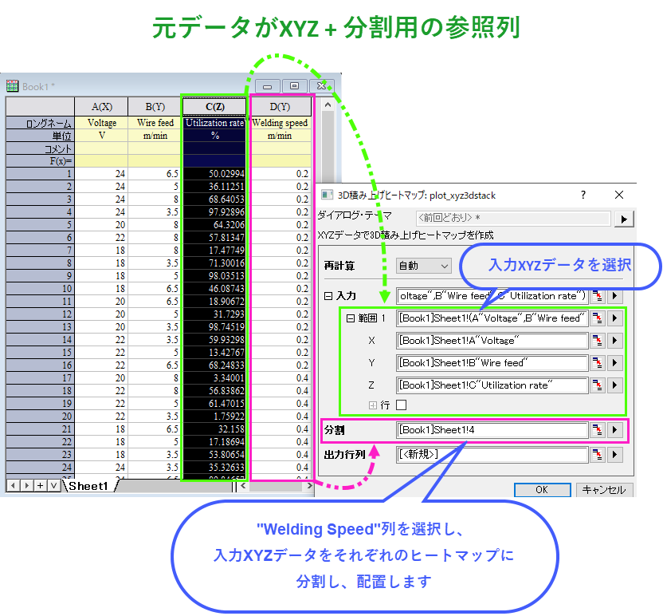
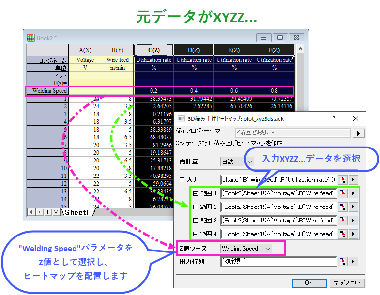

3D積み上げヒートマップ
3D-Stacked-Heatmaps

必要なデータ
- ワークシートからプロットする場合、
- (1)XYZデータとXYZ列を異なるグループに分けるもう1つの参照列が必要です。
- (2)XYZZ...データとヒートマップを載せるZ軸の位置を決める列ラベル行が必要です。
- 行列からプロットする場合、
- 同じ行列シートに最低3つの行列オブジェクトを準備します。
グラフ作成
ワークシートから作成
ワークシートをアクティブにして、XYZ+1つの参照列、もしくはXYZZ…データを選択します。
メニューからを選択します。plot_xyz3dstackダイアログが開きます。


これらの設定を行い、OKボタンをクリックすると3D積み上げヒートマップが作成されます。
行列から作成
複数の行列オブジェクトのある行列シートをアクティブにします。

メニューからを選択します。3D積み上げヒートマップが作成されます。
テンプレート
glStackedHeat.OTPU (Originのプログラムフォルダにインストールされています。)
Notes
- plot_xyz3dstackダイアログでは、分割オプションを使用して列を指定し、この参照列でソース ワークシートを分割します。参照列の値はＺ軸上のどこにヒートマップを置くかのZ値として使用されます。
- plot_xyz3dstackダイアログにて、Ｚ値ソースオプションはそれぞれのXYZヒートマップの位置づけるための列ラベル行を指定します。これは作図の詳細ダイアログにあるレイヤ属性のその他の3DオプションタブのZ値ソースオプションと似たものです。
- 積み上げヒートマップを編集する場合、下記ページをご覧ください。